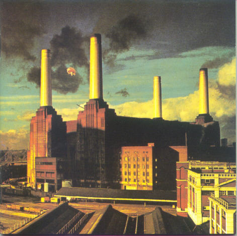
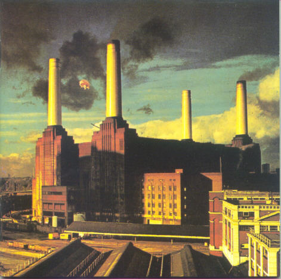

La banda de rock británica Pink Floyd es uno de los grandes iconos musicales del siglo XX.
Pink Floyd nació en Londres en 1964 Sus miembros habían formado parte de diversos grupos de la escena underground de la capital británica, hasta reunirse en una banda que se llamó inicialmente Tea Set, formada por Roger Waters, Nick Mason, Rick Wright y Syd Barrett. Estaban muy influidos por The Beatles, que estaban en el momento álgido de su fama, The Byrds y el blues norteamericano.
En 1967, grabarían su primer disco The Piper at the Gates of Dawn cuyo título proviene de la novela El viento en los sauces, de Kenneth Graham; era ya un trabajo muy innovador para la época, por el uso de efectos de eco y teclados electrónicos y gracias a la imaginería surrealista de las letras de Barrett. Junto a algunas composiciones de The Beatles, en la actualidad se considera el punto de arranque del rock psicodélico. Alcanzó un gran éxito en el Reino Unido, los que les permitió actuar como teloneros en un gira de Jimi Hendrix, que los lanzó en Estados Unidos.
Sin embargo, a pesar de ese temprano éxito, Pink Floyd estuvo a punto de disolverse, a causa de la adicción al LSD de Barrett, que prácticamente le impidió seguir actuando en directo. Después de muchas dudas, los restantes miembros del grupo decidieron sustituirlo como vocalista. Para este puesto fueron propuestos varios candidatos, como Jeff Beck, pero el elegido sería David Gilmour.
Pink Floyd ha vendido más de 300 millones de discos en todo el mundo. Se les considera los pioneros o creadores de estilos tan importantes como el rock psicodélico, el rock sinfónico y el progresivo. Su capacidad de modificar su sonido y explorar terrenos desconocidos, probablemente sólo ha tenido parangón en The Beatles y su influencia en la evolución de la música popular ha sido incalculable .


 
